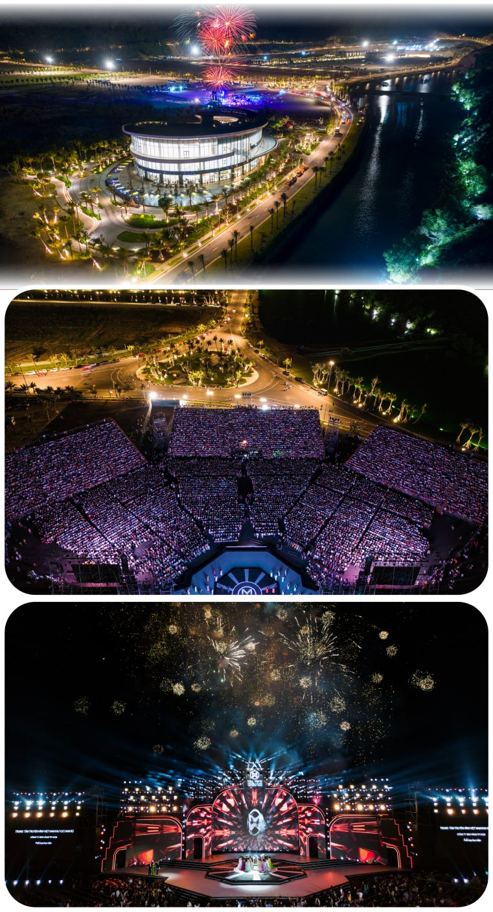

Và không có gì bất ngờ khi điểm đến “làm mưa làm gió” trên mạng xã hội suốt hai tháng vừa qua lại thuộc về một cái tên khá mới lạ: Quy Nhơn. Cư dân mạng “phát cuồng” với làng chài ven biển đẹp tựa phim Hàn ở Nhơn Lý, bãi biển trong veo nhìn thấy cả đáy ở Kỳ Co, cùng đảo Cù Lao Xanh đầy bí ẩn được mệnh danh là “Hòn ngọc viễn Đông”.
Từng lọt vào top 20 điểm đến đáng mong chờ nhất thế giới năm 2020, thành phố biển này được dự đoán sẽ là địa danh “must-go” trong thời gian tới. Đặc biệt, bên cạnh vẻ đẹp hoang sơ vốn có do thiên nhiên ban tặng, nơi đây còn khiến du khách háo hức trước một siêu phẩm du lịch nghỉ dưỡng do chính bàn tay con người tạo nên mang tên Merry Land Quy Nhơn.


Trước tiên, thiên đường giải trí Merry Land Quy Nhơn tọa lạc tại vịnh Hải Giang - một trong những bán đảo tự nhiên đẹp bậc nhất Việt Nam. Với địa thế “hai vai tựa núi, hai mặt hướng biển” cùng bãi biển hướng Nam tràn ngập ánh nắng ấm áp, nơi đây hẹn sẽ mang lại những trải nghiệm thượng lưu độc nhất vô nhị mà nhiều vùng đất khác không có được.
Nhìn ảnh thôi là chưa đủ, bạn phải tận mắt chứng kiến mới thực sự “wow, wow, wow” với khung cảnh tuyệt đẹp, hùng vĩ nơi đây.

Đặc biệt, Merry Land Quy Nhơn được thiết kế và vận hành bởi các tập đoàn quốc tế lớn như Marriott International, Everland Korea, Greg Norman, Sym Holding và Wyndham Hotels and Resort. Khi đến đây, du khách có thể trải nghiệm tất cả các dịch vụ vui chơi, giải trí, ăn uống, mua sắm, làm đẹp… mang đẳng cấp thế giới.
Nhờ hàng loạt tiện ích đa dạng và độc đáo này, Merry Land Quy Nhơn có thể làm hài lòng ngay cả những vị khách khó tính nhất. Dù đi một mình, với bạn bè hay cùng gia đình, chắc chắn bạn sẽ có một ngày cuối tuần đầy vui vẻ, sôi động và náo nhiệt tại “bán đảo thượng lưu không ngủ” này.


Đặt chân tới Merry Land, du khách nhanh chóng bị choáng ngợp bởi hệ thống 5 kênh đào chảy quanh 12 tuyến phố trong phân khu Bizhouse Canal District.
Thả bộ dọc theo dòng chảy của thiên nhiên, bạn sẽ dễ dàng liên tưởng đến sự trù phú và phồn thịnh của New York bên dòng sông Hudson, vẻ lãng mạn và mơ mộng của Paris bên dòng sông Seine, hay cái nhộn nhịp và tấp nập của Seoul bên dòng sông Hàn.

Bắc qua những dòng kênh là 33 cây cầu vọng cảnh được thiết kế hoàn toàn riêng biệt - điểm check-in không thể bỏ qua dù đi cùng gia đình hay nhóm bạn.
Đứng đây, du khách được thỏa sức sáng tạo với những kiểu ảnh lung linh cùng gia đình và bạn bè, chiêm ngưỡng dãy phố thương mại náo nhiệt, ngắm nhìn khu nhà với kiến trúc khác lạ hòa quyện giữa phong cách phương Đông và phương Tây.


Sau những giây phút vui chơi hết mình, du khách có thể dừng chân nghỉ ngơi tại bến du thuyền, nơi cung cấp đầy đủ các dịch vụ giải trí thượng lưu.
Điểm nhấn nổi bật nhất là Lagoon Seventy 8 - chiếc du thuyền hai thân không chỉ lớn nhất Việt Nam mà còn lớn nhất Đông Nam Á tính đến thời điểm này.
Lần đầu tiên, bạn có cơ hội tham gia những chuyến hải trình quốc tế thượng lưu kéo dài nhiều ngày đầy đẳng cấp.
Đứng trên boong thượng, du khách có thể vươn tầm mắt nhìn toàn cảnh biển cả xanh trong hùng vĩ.
Tắm nắng ngoài hiên, ngâm mình trong bồn sục jacuzzi, thưởng thức những tác phẩm nghệ thuật đình đám trong phòng chiếu phim… từng hoạt động sẽ khiến du khách thư giãn tối đa, cảm thấy thoải mái như ở nhà.


Hoàng hôn buông xuống cũng là lúc du khách mệt lử sau rất nhiều những hoạt động khám phá náo nhiệt. Dừng chân nghỉ ngơi lại quảng trường nhạc nước Beach Front sẽ là một sự lựa chọn hoàn hảo.
Với quy mô lớn và thiết kế vô cùng đặc biệt, nơi đây đã xác lập 2 kỷ lục: “Quảng trường có tổng diện tích lớn nhất Việt Nam" (44.283 m2) và “Quảng trường nhạc nước dài nhất Việt Nam" với tổng chiều dài toàn khu lên tới hơn 840m.
Thử tưởng tượng xem, khung cảnh sẽ chill tới cỡ nào ở nơi này. Bao nhiêu mệt mỏi, căng thẳng bấy lâu nay dường như được thổi sạch. Trả lại cho bạn một tâm hồn tươi trẻ, mát mẻ tới không ngờ.
Còn gì tuyệt vời hơn kết thúc một ngày vui chơi thú với việc thưởng thức những màn trình diễn nhạc nước Hologram Mapping 3D công phu và độc đáo, được thực hiện bởi Laservision - “nhà sáng tạo của những show diễn lớn nhất thế giới”.
Hệ thống đèn LED xếp đặt tinh tế theo đường nước sẽ tạo nên một bữa tiệc âm thanh - ánh sáng lung linh huyền ảo, hứa hẹn đem đến cho khán giả những câu chuyện ý nghĩa và hấp dẫn.

Trước khi về, đừng quên chụp một tấm ảnh lưu niệm tại tổ hợp cầu Y.O.U - tọa độ lãng mạn mà ai cũng muốn đặt chân đến một lần trong đời.
Tượng trưng cho ý niệm tình yêu trọn vẹn, chung thủy và trường tồn, nơi đây vô cùng phù hợp để các cặp đôi lưu giữ lại những khoảnh khắc lãng mạn bên nhau.

Đặc biệt, phần chữ O được tạo ra nhờ sự kết hợp của men thủy tinh ghi ánh xanh trên nền gốm mosaic trắng men, tạo nên một tác phẩm nghệ thuật đương đại.
Nhìn từ trên cao xuống, hình trái tim được xếp từ những viên gạch trông như đang tỏa sáng lấp lánh. Vào buổi tối, 600 ô đèn cùng phát sáng khiến trái tim thêm rực rỡ và ấn tượng.

Trong tương lai, Merry Land cũng sẽ bổ sung thêm nhiều phân khu giải trí thú vị khác như Water Park - công viên nước dành cho gia đình và trẻ nhỏ, Tropical Garden - khu vườn với đài quan sát thiên nhiên, Amusement Park - công viên chủ đề với nhiều trò chơi mạo hiểm hấp dẫn, sân Golf 18 lỗ do chính tay Greg Norman thiết kế,....